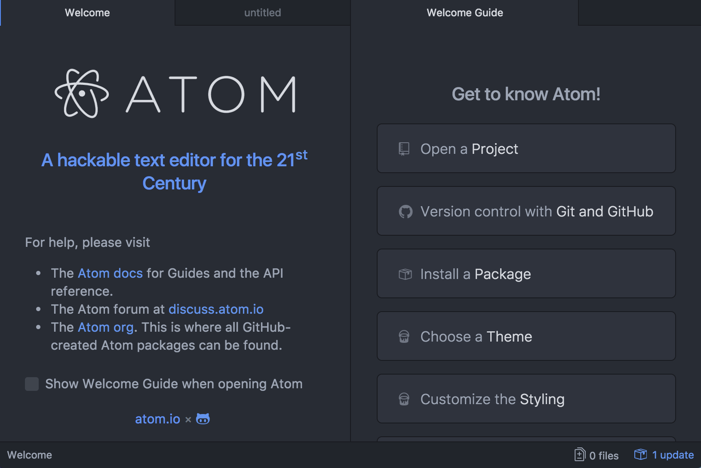
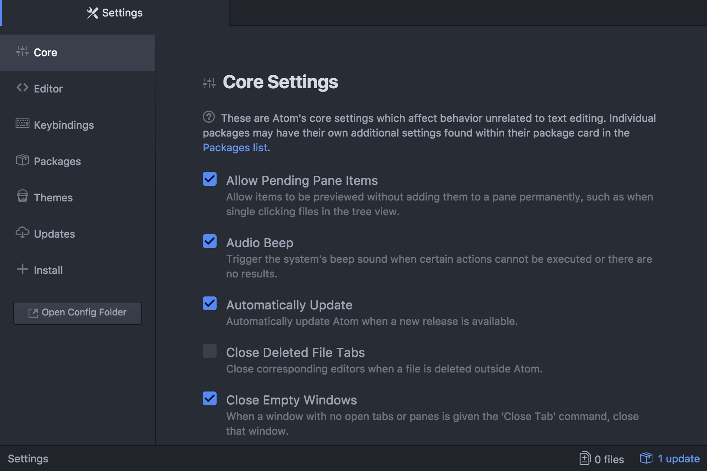
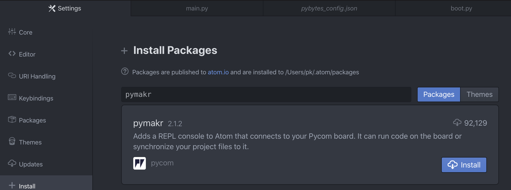
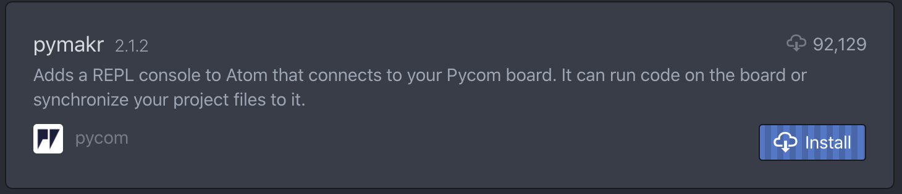
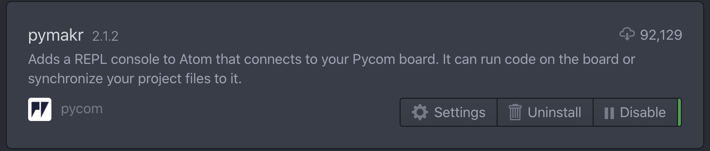
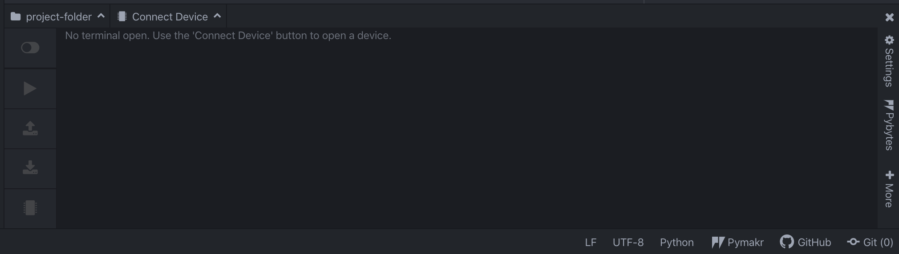
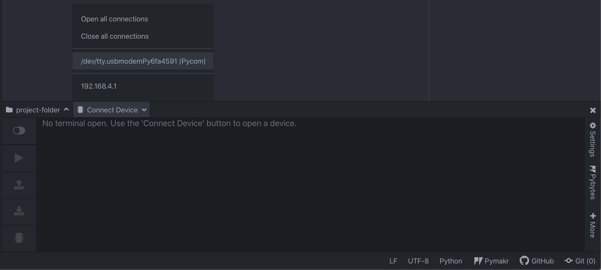
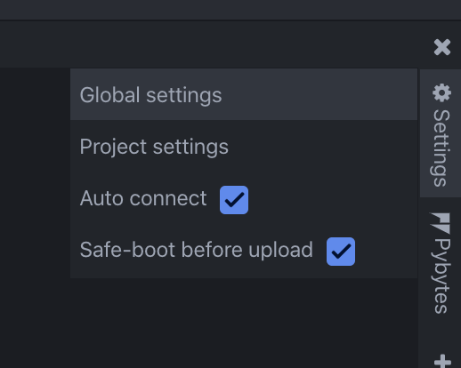
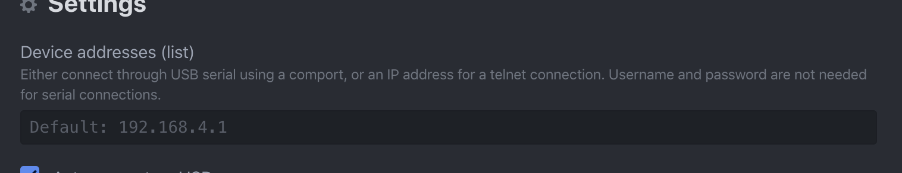

Atom
For beginners, users getting started with MicroPython & Pycom as well as Atom text editor users, we recommend the Pymakr Plugin for Atom. This section will help you get started using the Atom Text Editor & Pymakr Plugin.
Please follow these steps to install the Pymakr Plugin:
- Download and install Atom. Ensure that you have Atom installed and open.

Navigate to the Install page, via
Atom > Preferences > InstallSearch for
Pymakrand select the official Pycom Pymakr Plugin. You should now see and click the Install button. This will download and install the Pymakr Plugin. 
That’s it! You’ve installed the Pymakr Plugin for Atom. 
Connecting via Serial USB
After installing the Pymakr Plugin, you need to take a few seconds to configure it for first time use. Please follow these steps:
Connect your Pycom device to your computer via USB. If you are using an Expansion Board 2.0, and have just finished a firmware upgrade, be sure to remove the wire between GND and G23 and reset your device by pressing the button. Note: you don’t need the wire for Expansion Board 3.0
Open Atom and ensure that the Pymakr Plugin has correctly installed. 
Pymakr has auto-connection enabled by default. In case your device hasn’t connected right away, click on
Connect deviceand then on your device.

- Now it should show three arrows
>>>, indicating that you are connected!
.png)
These settings can also be applied on a per project basis by clicking Settings then Project Settings. This will open a JSON file which you can edit to enter your desired settings.
This process is easiest with either a Pycom Expansion Board or a Pytrack/Pysense as the addresses are automatically selected. For external products such as FTDI USB Serial Cables, the serial address may need to be copied manually. Additionally, the reset button on the device may also need to be pressed before a connection message appears.
Connecting via Telnet
After installing the Pymakr Plugin, a device may be connected via the telnet interface. Please see the following steps:
- Ensure that Pycom device is turned on
- Connect the host computer to the WiFi Access Point named after your board (the SSID will be as follows e.g.
lopy-wlan-xxxx,wipy-wlan-xxxx, etc.). The password iswww.pycom.io. - Go to
Settings>Global Settings

- In
Devices Addresses (List), enter192.168.4.1as the address.

- The default username and password are
microandpython, respectively. - Click
192.168.4.1in the Devices List pane, Pymakr will now connect via telnet.